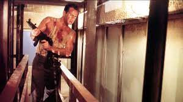

Najlepsze Filmy - TOP 3
Szklana Pułapka
Amerykański film sensacyjny w reżyserii Johna McTierna z 1988, pierwsza część serii o tym samym tytule. Film powstał na podstawie powieści Nothing Lasts Forever Rodericka Thorpa.
Film przedstawia historię nowojorskiego detektywa Johna McClane (Bruce Willis), który musi odbić wieżowiec japońskiej korporacji z rąk terrorystów.
W 2017 film został wpisany na listę National Film Registry. Film był nominowany do Oscarów za rok 1988 za: montaż, dźwięk, montaż dźwięku i efekty specjalne. Szklana pułapka jest uważana za klasyczny film akcji oraz najlepszy film o tematyce bożonarodzeniowej.
